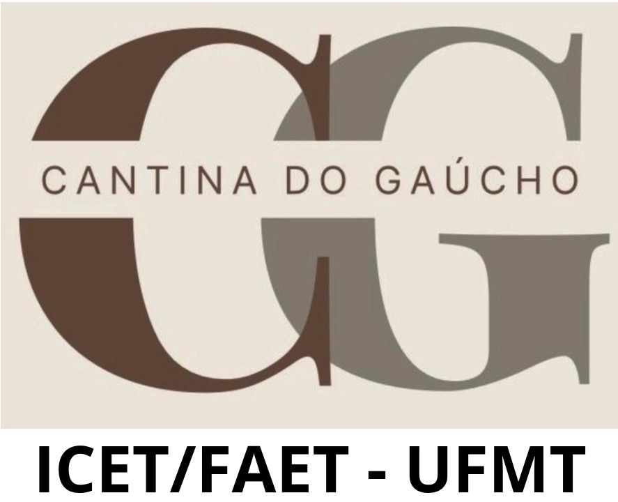
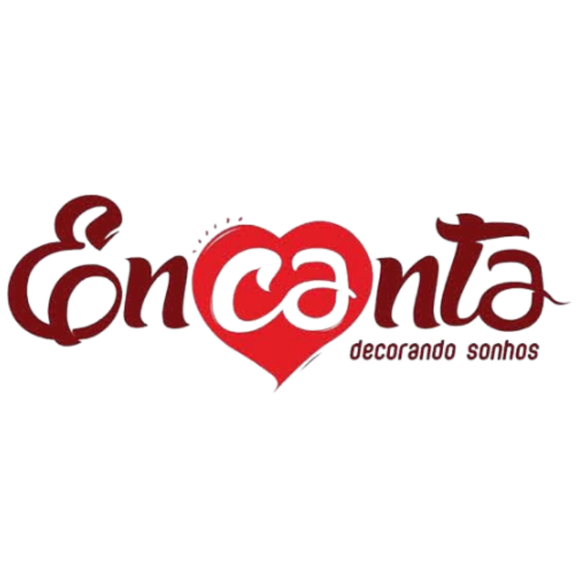

Apoio e Colaboração
A X Semana da Estatística agradece profundamente a todos os colaboradores, patrocinadores e instituições que contribuíram para a realização deste evento.




O sucesso da X Semana da Estatística é resultado do esforço conjunto de todos que acreditam na importância da Estatística e da Ciência de Dados para o desenvolvimento sustentável.